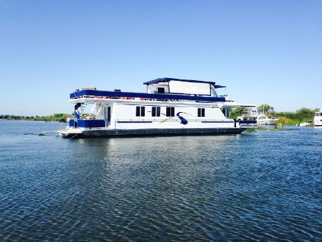

I am Sir Theodore I. Mattik, Esq. Heir to the Smuckers fortune. Here's a little bit more to get to know about me
I am 38 years old and I live in my parents house. I know that sounds bad, but they're loaded and it's a 30 room mansion.
Some of my favorite things to do are to just hangout with the boys. I'm a people person.
I was born April 27th 1979, that makes me a Taurus ladies.
Being super rich I had everything I could want, and it was great. I love having stuff.
By the time I was 8 I had over 50 awards for various activities, mostly for being a cool dude.
At the age of 12 I owned 5 Lambos and a boat. A boat! Boats are awesome. You own a boat? I did. I was 12.
School was never an issue for me. If my grades started to get too low I would just pay off the teachers. I graduated with a 4.0.

Twenty five years had gone by and I had money, things, and an awesome posse, but I still felt like something was missing.
It was more money and things. But what's the best way to get that? Treasure hunting of course!
I did my research on several pirates in order to locate burried treaure. That booty would be mine!
Step one, buy another boat. Yes, I already had a boat, but everyone knows you have to retire your first boat after 5 years. That's rule 19 of boats.
The next thing I had to do was hire a pirate crew, because who else knows burried treasure than a pirate?
It turns out that that's not a thing anymore so I just bought costumes for my posse. Good enough.
We set sail on the open sea to a little known place, Taiwan!
For being a place that no one knows about, there are a lot of people in Taiwan. Mostly just hustling Children.
The kids there were actually very mean. I kept getting my wallet stolen. In hindsight after the first few times I probably shouldn't have bought more.
Now was the time to find the treasure. We headed for Taipei.
We got there and saw it. The treasure was right in the open sitting on the sidewalk in front of a business building.
I opwened it and it was full to the brim with rare coins and little gems and jewels carved into cute little kittens.
But we did it. We found the treasure. All the blood, sweat, and tears had paid off. That was the happiest day of my life, right after the day I dunked on Lebron
At this point my life was complete. I decided to retire.

Now I spend my days sitting on the porch sipping on mint juleps and golfing. But mainly I hit up the clubs and end up in the news for scandals and whatnot.
Life is good.